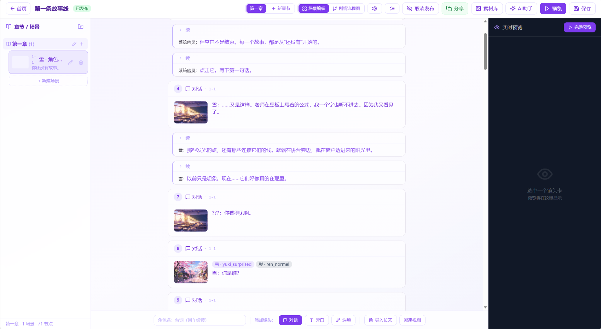
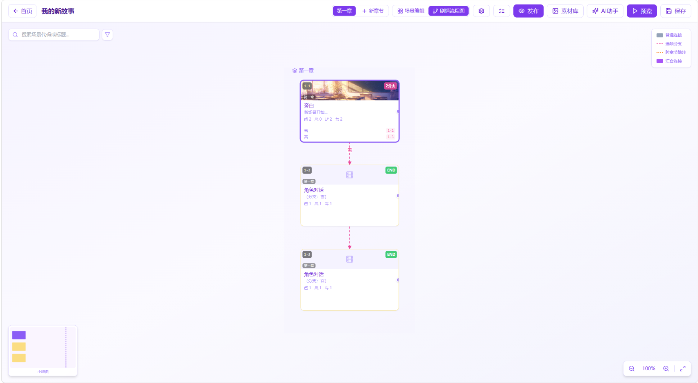
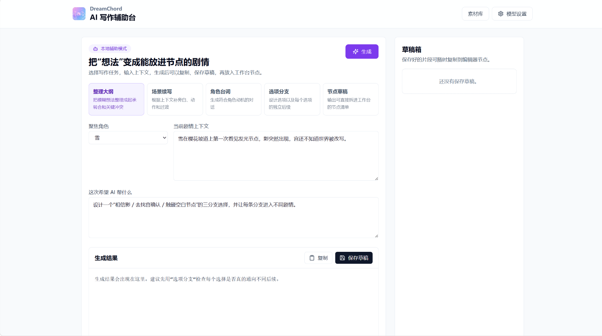
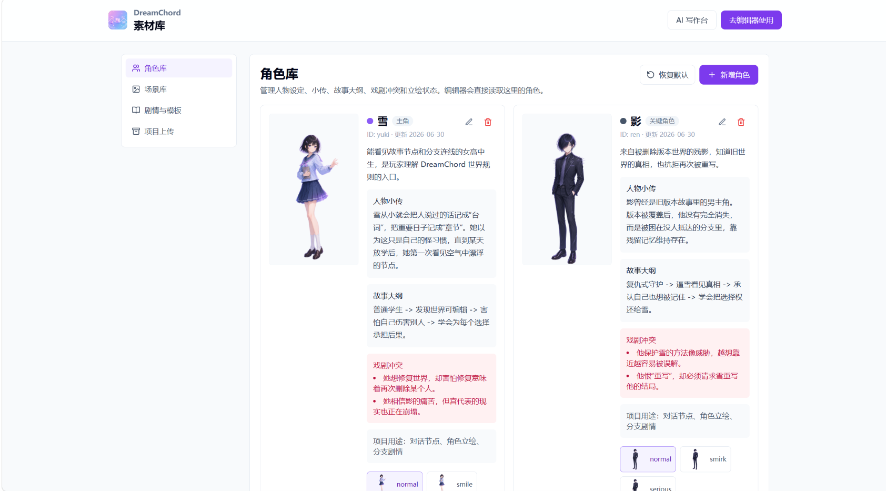
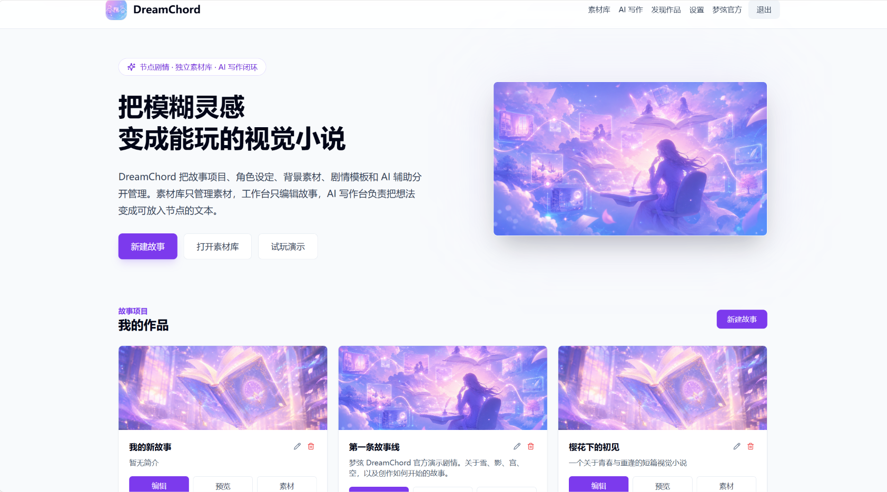
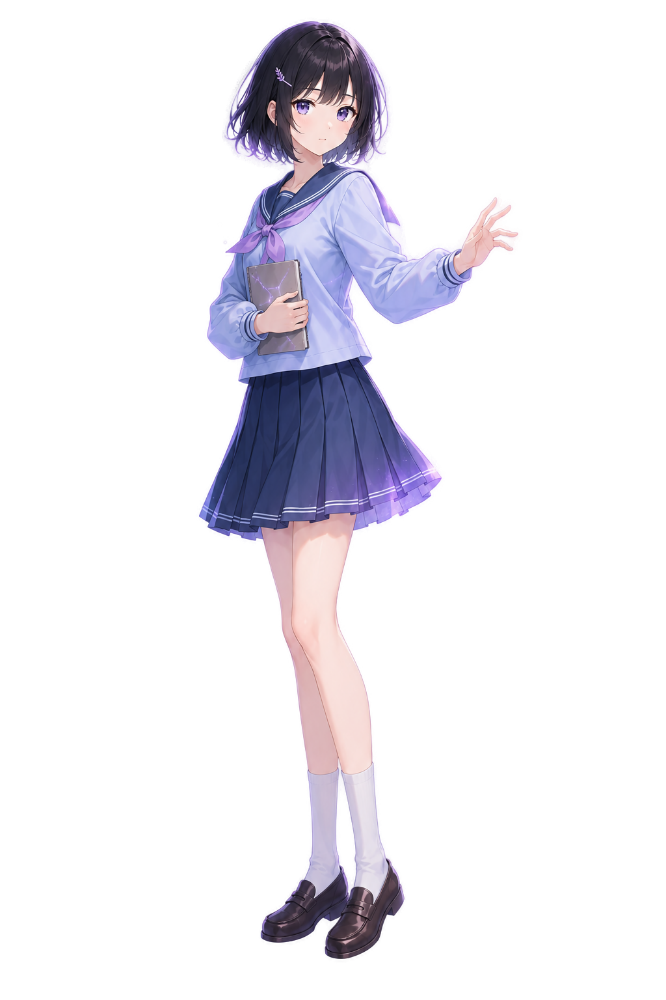
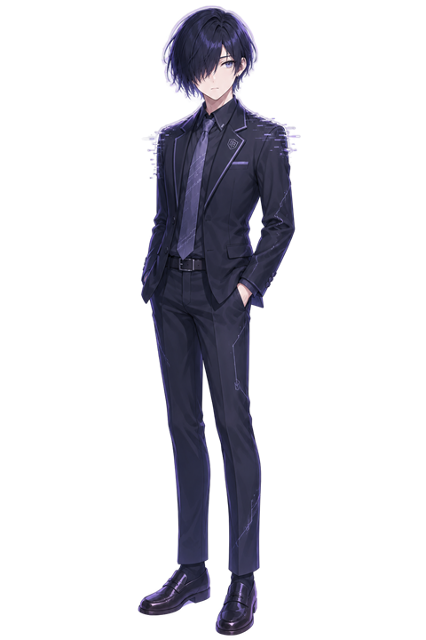
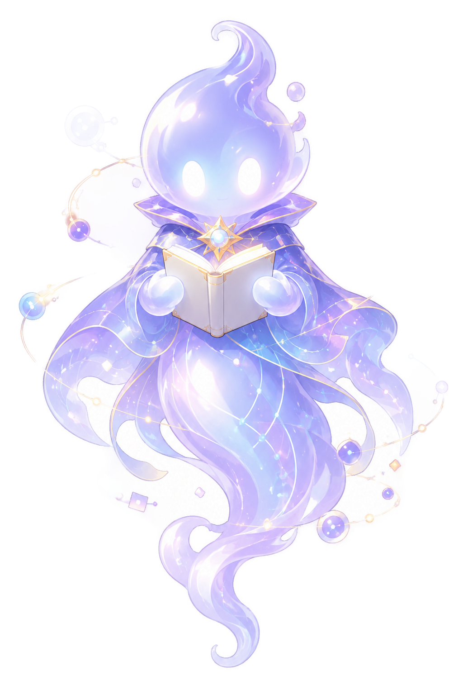

像写小说一样创作，像玩游戏一样阅读。
浏览器里的视觉小说创作平台——用镜头卡组织剧情，自动生成分支节点，内置 AI 辅助写作。
DreamChord 是一个面向非技术用户的视觉小说创作平台。传统视觉小说引擎（如 Ren'Py）要求创作者学习脚本语法、手动管理跳转标签、理解节点连线逻辑，门槛极高。DreamChord 的核心理念是：用户只需像写小说一样填写背景、选择角色、编写台词，系统自动将其转换为可播放的节点图和运行时场景。通过"章节 → 场景 → 镜头卡"三级结构组织剧情，一键发布即可在浏览器中直接播放——无需安装任何运行时，无需部署服务器，分享链接即可阅读。
DreamChord 不是替代 Ren'Py 的下一代引擎，而是面向另一群人——想写视觉小说但不想学代码的创作者。下表从 8 个维度对比三类工具的核心差异。
| 能力维度 | Ren'Py | TyranoBuilder | DreamChord |
|---|---|---|---|
写作方式 用户如何编辑剧情 |
手写 .rpy 脚本 | 可视化节点连线 | 镜头卡填表式写作 |
编程门槛 是否需要写代码 |
需学 Python + Ren'Py 语法 | 低，但节点图仍需理解 | 零代码，纯填写 |
实时预览 编辑时是否即时看到效果 |
需重新编译运行 | 部分预览 | 右栏实时所见即所得 |
分支可视化 全局查看分支结构 |
无，全靠记忆 | 节点图视图 | 流程图 + 汇合点高亮 |
AI 辅助 内置 AI 写作功能 |
无 | 无 | 5 种模式 + 4 家供应商 |
运行环境 读者如何游玩 |
打包 exe / apk 分发 | 打包为 Web 或 exe | 浏览器直接打开链接 |
长文导入 从小说文本快速拆分 |
无，手动逐句转写 | 无 | 粘贴正文自动拆分镜头卡 |
项目体检 自动检测剧情结构问题 |
无 | 无 | 12 项健康检查 |
以下均为项目实际运行截图，非设计稿。从编辑器到流程图，从 AI 写作到素材管理，每一处界面都围绕"让创作更简单"设计——隐藏节点图复杂性，暴露小说式写作体验。

三栏布局是整个产品的核心。左侧 SceneTree 管理章节和场景的树形结构——新建章节、新建场景、重命名、删除，全部在树中完成。中间 ShotCardEditor 是用户真正写作的区域，每张镜头卡像一张便签卡片，包含背景选择、角色登场、台词编辑、选项设置。右侧默认显示 MiniPreview 实时预览，也可切换为素材库或 AI 助手面板。所有编辑操作通过 Zustand store 统一管理，自动防抖保存。

当剧情复杂到需要全局视角时，切换到剧情流程图视图。这是 galgame 风格的全局可视化——所有场景以卡片形式排列，按章节分行。普通场景间用实线箭头连接，选项分支用虚线箭头并标注选项文本。汇合场景（接收多条不同场景入边）自动检测并以紫色高亮 + GitMerge 图标标识。支持滚轮缩放、拖拽平移、拖拽场景卡片调整位置、拖拽创建场景间连接。

独立的 AI 写作工作台，五种模式覆盖从构思到落笔的全流程。选择任务类型（整理大纲 / 场景续写 / 角色台词 / 选项分支 / 节点草稿），输入当前剧情上下文和辅助需求，AI 生成结果可直接复制或保存到草稿箱。草稿箱持久化保存，随时可复制到编辑器节点。未配置 AI 时使用本地规则引擎生成基础内容，配置后通过 BaseOpenAICompatibleProvider 统一接口调用 GLM / DeepSeek / Kimi / OpenAI。

角色立绘、背景图、表情差分统一管理。每个角色卡片采用漏斗式信息层级：立绘全身像 → 一句话定位 → 人物小传 → 故事大纲 → 戏剧冲突（粉色高亮）→ 底部表情差分选择器。戏剧冲突字段用色彩背景突出，降低创作者在大量角色间扫描核心矛盾的成本。支持恢复默认素材和自定义上传，上传的素材通过 customUrl 字段处理非标准路径。

项目首页即创作者入口。Hero 区展示产品定位和核心价值主张，下方"我的作品"卡片网格管理所有项目——显示发布状态、场景数量、节点数量。三个入口按钮覆盖完整路径：新建故事进入编辑器、打开素材库管理角色和背景、试玩演示体验官方示例剧情。一键发布后生成分享链接，读者打开浏览器即可游玩，无需安装任何客户端。
内置雪、影、宫、空和系统幽灵的 Meta 引导短剧，展示背景切换、角色登场退场、表情差分变化和分支选择。每个角色拥有独立的性格设定、故事弧线和戏剧冲突，可直接在编辑器中调用。




使用项目内置的 4 张背景图和 4 位角色立绘，展示对话、选项分支、旁白和系统提示在播放器中的实际渲染效果。每张场景卡包含背景图、角色立绘、文本框和（如有）选项按钮。
每张镜头卡编译为背景节点、角色节点和文本节点，系统自动生成连线。选项卡额外生成 choice-N 出边连接到分支场景。用户只需选择镜头类型、填写内容，无需关心底层节点结构。
用户的写作方式直接映射为运行时节点图，系统自动完成全部转换——从镜头卡到节点到运行时场景到播放器渲染，五个环节全自动。
填写背景、选择角色、编写台词——像写小说一样，无需理解节点图
createSceneNodes 创建背景/角色/文本节点，chainEdges 连接节点链，normalEdge 连接场景间
convertFlowToRuntime 从起始节点深度优先遍历，追踪角色状态和背景变化，生成线性场景数组
createRuntimeEngine 管理场景推进 next()、分支选择 choose() 和事件触发 emit()
打字机逐字效果、角色立绘淡入淡出、选项按钮渲染、Web Audio 音效播放
React 18 + TypeScript + Vite 前端，Express + Prisma + SQLite 后端，集成四家 LLM 供应商。Monorepo 架构，pnpm workspace 管理前后端共享依赖。
Node.js 20+ 环境，pnpm 或 npm 均可。默认测试账号 demo / demo123，开箱即用。
克隆仓库后安装前后端依赖（pnpm workspace 会自动处理共享依赖）
git clone https://github.com/tl66666/DreamChord.git
cd DreamChord && pnpm install配置 .env 环境变量，运行 Prisma 迁移创建表结构，执行种子数据初始化
cd apps/server
cp .env.example .env
npx prisma migrate dev && npx prisma db seed双击 start-dreamchord.bat 一键启动，或手动分别启动前后端开发服务器
cd apps/web && npm run dev
cd apps/server && npm run dev关于使用方式、技术选型、素材规范和后续迭代的常见疑问。点击问题展开解答。
DreamChord 的过去、现在和未来。绿色为已完成，紫色为进行中，琥珀色为规划中。
三栏布局编辑器、镜头卡写作、节点图转换、播放器打字机效果、角色立绘渲染、选项分支系统
章节 → 场景 → 镜头卡三级结构、剧情流程图视图、汇合点紫色高亮、场景拖拽和连接线编辑
5 种 AI 模式（润色、续写、选项、分支、剧情图）、4 家供应商适配（智谱、DeepSeek、Kimi、OpenAI）
小说正文自动拆分镜头卡、12 项项目健康检查、素材库面板、自定义上传素材、一键发布分享
项目介绍网站、动画效果、对比表格、FAQ、README 和 AI_HANDOFF 文档、CLAUDE.md 规范
背景音乐管理面板、循环播放、淡入淡出过渡、场景切换音乐衔接、音量控制
TTS 自动朗读台词、角色全身入场动画、屏幕震动效果、转场特效（淡入淡出、百叶窗、马赛克）
i18n 国际化支持、多人实时协作编辑、评论批注系统、版本历史回溯